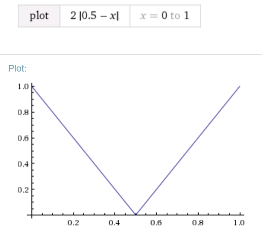

Travel log, part 1: Naples
(And more importantly, Vesuvius and Pompeii)This past semester, I studied abroad in Budapest, Hungary. Being in Europe, the land of cheapo airlines, enabled me to do a fair bit of traveling and with all of my flights and layovers and jet lag awaiting me on the return trip, I figured I might as well spend some time talking about the places I visited and the cool stuff I did there.
Dates of travel: Saturday, 5/21 to Tuesday, 5/24
General
My trip to Naples was a last minute, spur of the moment trip that I booked two days ahead of time. I wanted to squeeze one last destination in to my study abroad experience but forgot to book anything. Surprisingly, a round trip ticket from BUD to NAP on WhizzAir was only ~$107. The luggage restrictions weren't a problem, as I have a small backpack that fits as a personal item but still easily carries a few days worth of worth of clothes. When my flight got in early Saturday, I did the usual: hop on GMaps and figure out how to get to the center of town. The central station is only about an hour's walk from the airport, so I set off. First thing to note, is that you should consider this place tropical. It was upwards of 80°f and sunny for all but Tuesday. Needless to say, I should have taken transport, but I didn't want to waste money on a taxi and the public transit is complete rubbish. To expand on this: compared to most other places I visited, there are absolutely no English instructions OR English speaking workers to assist. You're on your own. Another thing is that all the services are run by a private company, TrenItalia, and it's not immediately apparent that this company is, in fact, the subway/train system. They also didn't have a three day pass or any short term multi use pass that I could find in the ticket machine. I didn't even try my luck with the buses, but the trains were luckily enough to get me to the few places outside the city that I needed to go. As a warning, I noticed that the public transit directions on GMaps seemed to be incomplete or incorrect, so make sure to poke around on the city maps first.
Regardless, when I reached the central station I stole some wifi (free wifi is pretty rare here) and found Art Hostel, a cheap hostel about a 30 minute's walk away. I was fairly happy with this place. For €20 a night, they provide good rooming (with 5 other people) and bathroom facilities, free wifi, and breakfast. It isn't in the most convenient location, but it isn't too far removed either. One thing you'll notice in the city is the sheer amount of graffiti. I don't think I saw a SINGLE building without it. I'm not sure if this is a huge problem in Naples but it seems to just about match how unclean the streets and sidewalks were. I don't like to sound soft about things not looking great, but Naples was BY FAR the dirtiest city I visited and also happens to have the worst driving. Mopeds with entire families on them (parents, two kids, and a dog, all unhelmeted) constantly weave through traffic, and there doesn't seem to be a standard to yielding. There are continuous close calls on the narrow streets and pedestrians don't seem to even look when crossing. The worst part though is that there are absolutely no quiet drivers. They seem to have made a language out of honking and every situation seems to warrant it.
Places
National Archaeological Museum
This is apparently a huge attraction in Naples and is conveniently about a block from Art Hostel. Admission is €8 and the audioguide is more. Even though I did not get it, I wold recommend the audioguide because none of the short descriptions of the works have English translations. The museum features many beautiful ancient statues and mosaics, as well as very cool modern sculpture installations. This is easily doable in 2 hours.
Small chapel
Very interesting chapel with the absolute best marble sculptures I have ever seen. Unfortunately, it is basically only one room, and the map is a little misleading. There are audioguides available but there are also English descriptions. Overall I would say it is worth the €5 admission for maybe 30 minutes of looking at some really cool statues.
Royal Palace
Absolutely incredible fancy palace. When I visited, the entire outside of the building was covered in scaffolding for renovations, but the inside was totally untouched. You can tour the royal rooms and apartments. There are good English info placards. I would give this place two hours or so.
Other things
Walking south from the palace will take you past the large chapel opposite, you'll immediately reach the ocean. There are two forts nearby. The smaller one, accessible via a bridge, is Castel dell'Ovo, while the larger one is Castel Nuovo. I didn't have a chance to visit either, but hanging out by the waterfront is very relaxing. I recommend getting some seafood either from one of the restaurants on the end of the port or from a street vendor. This area is about the most scenic coast you can find in the area. Everything else is taken up by ports and docs.
Vesuvius
If you come to Naples, you're gonna want to do this. The easiest way to get to the top of the active volcano is to take a bus called Vesuvio Express which will take you almost all the way to the top at which point you can walk ~15 minutes the rest of the way. You can get to it by going to the Central station and taking the Circumvesuvio (get it?) line to the Ercolano stop. (Note that Portico-Ercolano != Ercolano!!! If you got on Line 1 or Line 2, you made the wrong choice. I learned this the hard way.) The agency is on the left as you walk out. Total cost is €20 and the trip takes about 40 minutes each way. You'll have 90 minutes at the top to take as many pictures as you can before the bus leaves again. (If you miss it, tough luck). Needless to say, there are some incredible views at the top that make the journey completely worth it.
Pompeii
After descending from Vesuvius, you can continue on the Circumvesuvio line for a few more stops and reach Pompeii. The entrance to the ruins is less than 50 meters from the exit to the train stop. The line didn't seem to be too long, and I explored most, if not all of the ruins in around 5 hours. There are incredible views if you reach the vineyard section around sunset.
1/12/16
Fading text on a DrawerLayout in Android
Some applications, (notably, past versions of Spotify) have a drawerlayout which has the toolbar sitting above the drawer itself, so apps have the ability to display separate titles for both drawer states. Now, having different titles for the different drawer states can be trivially achieved by setting them in the ActionBarDrawerToggle constructor:
toggle = new ActionBarDrawerToggle(this, mDrawerLayout, mToolbar, R.string.title1, R.string.title2){...
@Override
public void onDrawerSlide(View drawerView, float slideOffset) {
super.onDrawerSlide(drawerView,slideOffset);
if(slideOffset > .50 && !isDrawerOpen){
toolbar.setTitle("Profile");
isDrawerOpen = true;
} else if(slideOffset <= .50 && isDrawerOpen) {
toolbar.setTitle("BandInsider");
isDrawerOpen = false;
}
}
};
The float parameter passed in to the onDrawerSlide method is a number from 0.00 to 1.00 which represents the percent that the drawer is extended. Here we change the title when the drawer is halfway open or closed. However, this ends up looking pretty ugly when animated:
Now here, a trick we can do is to change the opacity of the title so that it is transparent when the title changes. We can whip up a quick math function that takes in a variable x, and gives values of 255 when x is 0 and 1, and gives a value of 0 when x is 0.5 (halfway open/closed):
Of course, since we need a proper alpha value to set the title text color, we have to scale this function by 255:
toolbar.setTitleTextColor(Color.argb((int)(255*(2*(Math.abs(.5-slideOffset)))),255,255,255));
Here it is, implemented at the very end of our onDrawerSlide function:
As you can see, having the title be completely transparent when it changes text results in a much smoother animation. However, it still seems a little jarring when viewed at a fast speed. We can do better by constructing a parabolic curve instead of a linear one:

toolbar.setTitleTextColor(Color.argb((int)(255*(4*Math.pow(slideOffset-.5,2))),255,255,255));
Now the text animates very smoothly. If anyone can come up with something better, like a bell curve, drop me an email!
10/4/15
The mess that is Android
Recently, thanks to my Android app development class, I've gotten into Android programming, and as a result, I've noticed how deeply flawed the platform is. Now, I am no stranger to Android. My first smartphone was a Droid 2, I have a Galaxy S 4 & Galaxy Tab 10.1, and I know my way around custom roms, rooting, bootloaders and the like. But to be honest, I hadn't actually used an Android phone in 4 years until about a month ago when I found that GS4. I booted it up, hoping to see that Android had improved, but alas, it had made no progress in 4 years. The same problems still plagued the platform:
Bloatware
This is the most infuriating problem to me. It's like phone makers are willing to deliberately sacrifice software quality in order to make some extra cash. This may make sense for low end, $0 on contract phones, but what about a $200 flagship smartphone? When I reset and updated the GS4, I ended up with over 50 preinstalled apps. 3 music apps, 2 video apps, 2 messaging apps, countless AT&T apps trying to sell extra services that nobody ever uses, among a dozen other apps which added absolutely nothing to the device. All of these were permanent and not removable to the average user. A few of them even spammed notifications daily. So much bloat fills up a phone and detracts from the user experience. iOS and even Windows Phone do not have this problem.
Vulnerabilities
Recently, two major vulnerabilities in Android surfaced: one allowing attackers to bypass user's lockscreens, and another in the media decoder, both affecting millions of devices. Software as complicated as an operating system is generally insecure, but most operating systems are updated continuously. In theory, Android is too, but millions of devices affected by these vulnerabilities will remain vulnerable due to the last problem:
Lack of Updates
Android 6.0 images are out! I have a *single* Android device that’s eligible (…out of 30?) https://t.co/rbaKQem9hl /via @b3ll
— Steve T-S (@stroughtonsmith) October 6, 2015My Droid 2 got one official update, from 2.2 to 2.3. Keep in mind, this was a flagship, top of the line phone, and there was no excuse for Motorola to drop support so quickly. This fate happens to many phones, even recently. Motorola will end support for the Moto E, after 219 days, 1 update, and the promise of more. Many phone manufacturers seem to drop support for devices after a year or so, halfway through a standard phone contract. Contrast this to Apple, who recently made iOS 9 available on the iPhone 4s, a phone that launched 4 years ago, on the same day that everyone else got it. This problem makes Android a nightmare for developers, as we have to target year-old API levels in order to capture compatibility with a reasonable number of devices.
These issues in Android seriously need to be addressed in order for it to compete long term with iOS. Google could easily leverage carriers and manufacturers to fix these flaws, which leaves me to question why they haven't yet.